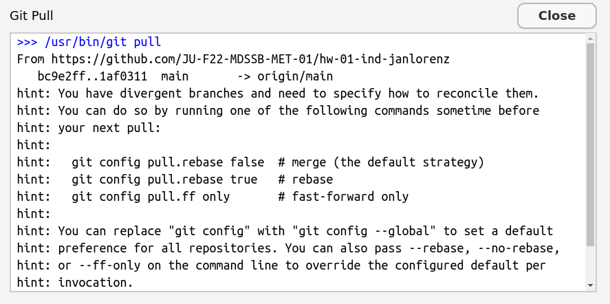
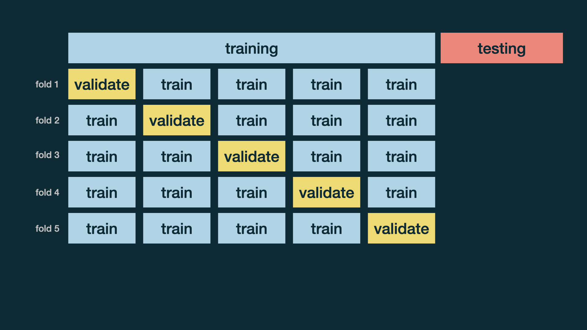
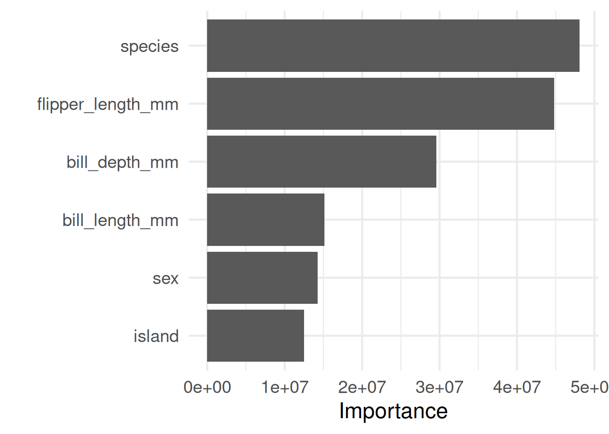
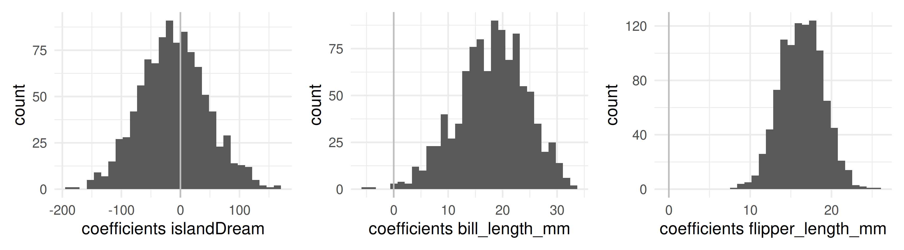
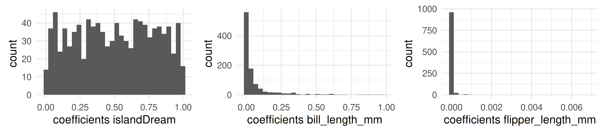
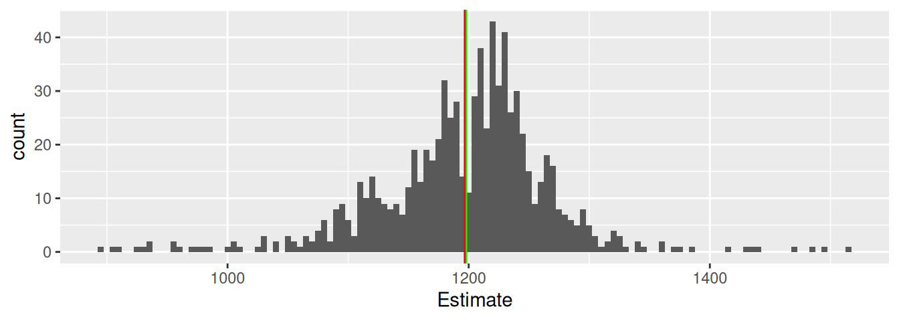
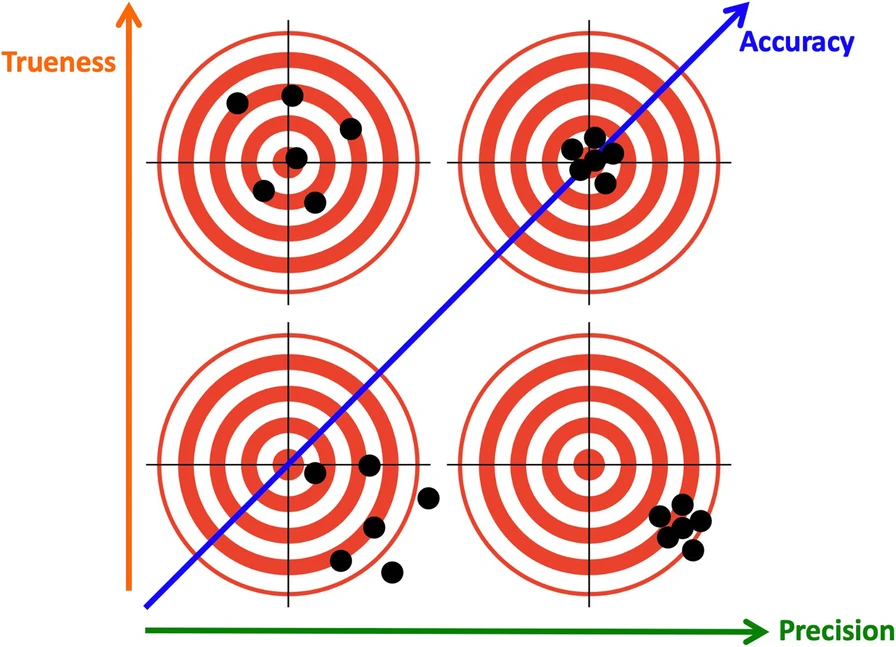

Attaching package: 'rpart'
The following object is masked from 'package:dials':
prune
library(ranger)library(vip)
Attaching package: 'vip'
The following object is masked from 'package:utils':
vi
library(palmerpenguins)
Attaching package: 'palmerpenguins'
The following object is masked from 'package:modeldata':
penguins
The following objects are masked from 'package:datasets':
penguins, penguins_raw
library(openintro)
Loading required package: airports
Loading required package: cherryblossom
Loading required package: usdata
Attaching package: 'openintro'
The following object is masked from 'package:modeldata':
ames
1 Final Project
1.1 A project report in a nutshell
You pick a dataset,
do some interesting question-driven data analysis with it,
write up a well structured and nicely formatted report about the analysis, and
present it at the end of the semester.
1.2 Six types of questions
Descriptive: summarize a characteristic of data
Exploratory: analyze to see if there are patterns, trends, or relationships between variables (hypothesis generating)
Inferential: analyze patterns, trends, or relationships in representative data from a population
Predictive: make predictions for individuals or groups of individuals
Causal: whether changing one factor will change another factor, on average, in a population
Git can merge changes in the same file when there are no conflicts. Let’s try.
The second team member:
Add your name in the author section of the YAML, save the file, git add, commit and with message “Next author name” and push.
The third (or first) team member:
Change the title in the YAML to something meaningful and also add your name (if you are the third team member not the first again), save the file, git add and commit with message “Title changed”.
Try to push. You should receive an error. Read it carefully, often it tells you what to do. Here: Do git pull first. Why you can’t push? Because remotely there is a newer commit (the one your colleague just made).
Pull. This should result in message about a successfull auto-merge. Check that both are there: Your line and the line of your colleague. If you receive several hints instead, first read the next slide!
2.5 ??? git configuration for divergent branches
If you pull for the first time in a local git repository, git may complain like this:

Read that carefully. It advises to configure with git config pull.rebase false as the default version.
How to do the configuration?
Copy the line git config pull.rebase false.
Go to the TERMINAL. Paste the command (Ctrl+Shift+V) and press enter. Now you are done and git pull should work.
What is a branch and what a rebase? These are features of git well worth to learn but not now. Learn at http://happygitwithr.com
2.6 Step 5: Push and pull the other way round
The third/first member:
The successful merge creates a new commit, which you can directly push.
push
The second team member (and all others):
pull the changes of your colleague.
Practice a bit more pulling and pushing commits and check the merging.
2.7 Step 6: Create a merge conflict
First and second team members:
Write a different sentence after “Executive Summary.” in YAML abstract:.
Both git add and git commit on their local machines.
First member: git push
Second member:
git pull. That should result in a conflict. If you receive several hints instead, first read the slide two slides before!
The conflict is visible directly in the file with markings like this
>>>>>>>>
one option of text, ======== a separator,
the other option, and <<<<<<<.
2.8 Step 7: Solve the conflict
The second member
You have to solve this conflict now!
Solving is by editing the text
Decide for an option or make a new text
Thereby, remove the >>>>>,=====,<<<<<<
When you are done: git add, git commit, and git push.
Now you know how to solve merge conflicts. Practice a bit in your team.
2.9 Advice: Collaborative work with git
First pull whenever you start a work session in a collaborative project.
Inform your colleagues when you pushed new commits.
Coordinate the work, e.g. discuss who works on what part and maybe when.
When you finish your work session, end with pushing a nice commit. That means. The file should preview well.
When you work on different parts of the file, be aware that also a successful merge can create problems. Example: Your colleague changed the data import, while you worked on graphics. Maybe after the merge the imported data is not what you need for your cell. Coordinate your data especially data import and wrangling.
Commit and push often. This avoids that potential merge conflicts become large.
3 More Prediction Modeling: Cross-Validation, Tuning, Random Forests
3.1 Workflow prediction model
Data splitting into training and test data initial_split(), training(), testing()\(\to\)train and test datasets
Recipe for preprocessing recipe(), specify response variable and preprocessing steps for predictors
Model specification
E.g. decision_tree(), set engine rpart, mode regression or classification
Workflow to combine recipe and model (still all just specifications) workflow() with add_recipe(), add_model() creates a workflow object
Fit the model with training data using the workflow (finally the computation happens!) fit() with workflow and train data
Predict response variable for rows of the test data predict() with fitted workflow and test data
Evaluate performance using the orignal variable (ground truth) in test data metrics() by specifying truth and estimate columns
3.2 Decision Tree
set.seed(12345) # Test with other seeds to see how the Train-Test-Split changes results!# 1. Train-Test-Splitpeng_split <-initial_split(na.omit(penguins), prop =0.8, strata = sex)peng_train <-training(peng_split)peng_test <-testing(peng_split)set.seed(NULL) # Reset random. See that the decision tree algorithm is deterministic! Test it!# 2. Preprocessing-Recipepeng_recipe <-recipe(body_mass_g ~ ., data = peng_train) |>step_rm(year)# 3. Modelpeng_regtree <-decision_tree() |>set_engine("rpart") |>set_mode("regression")# 4. Workflowpeng_regtree_wf <-workflow() |>add_recipe(peng_recipe) |>add_model(peng_regtree)# 5. Fitpeng_regtree_fit <- peng_regtree_wf |>fit(data = peng_train)# 6. Predict with test datapeng_regtree_pred <- peng_regtree_fit |>augment(peng_test)# 7. Evaluate performancepeng_regtree_pred |>metrics(truth = body_mass_g, estimate = .pred)
# A tibble: 3 × 3
.metric .estimator .estimate
<chr> <chr> <dbl>
1 rmse standard 350.
2 rsq standard 0.811
3 mae standard 284.
New: augment() adds the predictions as a new column .pred to the peng_test data-frame. Before we did the same manually with predict() and bind_cols().
Cost complexity (cp): Controls pruning of the tree. Higher values result in smaller trees.
Minimum split (minsplit): Minimum number of observations in a node to be allowed to split further. Higher values result in smaller trees.
Note: Terminology in tidymodels and original rpart differ. tidymodels tries to unifying terminology across models. Thus, cp is called cost_complexity and minsplit is called min_n.
. . .
Is the decision tree a deterministic algorithm? Yes, given the same training data and hyperparameters, it always results in the same tree.
. . .
However, the Test-Train-Split is and the performance measures would be different for each new split!
3.4 How reliable are performance metrics?
Model performance changes with the random selection of the training data. How can we then reliably compare models?
. . .
A solution: Cross-validation
. . .
More specifically, \(v\)-fold cross-validation:
Shuffle your data and make a partition with \(v\) parts
Recall from set theory: A partition is a division of a set into mutually disjoint parts which union cover the whole set. Here applied to observations (rows) in a data frame.
Use 1 part for validation, and the remaining \(v-1\) parts for training
Repeat \(v\) times
3.5 Cross-validation

3.6 Cross-validation
Cross-validation replacing the Train-Test-Split in the workflow:
set.seed(1) # Test with other seeds to see how the Train-Test-Split changes results!# 1. 5-fold Cross validationpeng_folds <-vfold_cv(na.omit(penguins), v =5, strata = sex)set.seed(NULL) # Reset random. See that the decision tree algorithm is deterministic! Test it!# 2. Preprocessing-Recipe: Same as before# 3. Model: Same as before# 4. Workflow: Same as before# 5. Fit: We use peng_regtree_wf and use fit_resamples() to fit for all foldspeng_regtree_fit <- peng_regtree_wf |>fit_resamples(resamples = peng_folds)# 6./7. (Predict) and evaluate performance for all foldspeng_regtree_fit |>collect_metrics(summarize =FALSE, type ="wide")
collect_metrics(summarize = TRUE) averages performance across folds and repeats!
In total there are 400 fits (16 parameter combinations \(\times\) 5 folds \(\times\) 5 repeats).
# 4.e. SEE BEST PARAMETERS AND SELECT BESTbest_params <-select_best(peng_tune_results, metric ="rmse")show_best(peng_tune_results, metric ="rmse") |>select(-.estimator, -.config)
Best parameters: min_n = 2, cost_complexity = 0.02
3.10 Fit with tune parameters
# 5. Fit: FINALIZE AND FIT WITH BEST PARAMETERS and fitpeng_regtree_fit <- peng_wf |>finalize_workflow(best_params) |>fit(data = peng_train)# 6./7. Predict and Evaluatue with test data (as before)peng_regtree_fit |>augment(peng_test) |>metrics(truth = body_mass_g, estimate = .pred)
# A tibble: 3 × 3
.metric .estimator .estimate
<chr> <chr> <dbl>
1 rmse standard 350.
2 rsq standard 0.811
3 mae standard 284.
Although, best parameters differ from default, performance is the same.
This can happen, especially when the model is simple and the dataset is small.
. . .
How can we improve the performance with the idea of trees? Create several trees and aggregate them in a random forest!
Build many decision trees independently (default: 500 trees), each trained on the full dataset
In each tree do the following at each decision node:
Randomly select mtry features from all available features (e.g., 2 out of 6, rule of thumb: square root of the number of features)
Find the best split only among those randomly selected features.
The randomness in variable selection at each split ensures trees are different from each other, this shall reduce overfitting.
Make predictions by
averaging predictions across all trees (regression) or
══ Workflow [trained] ══════════════════════════════════════════════════════════
Preprocessor: Recipe
Model: rand_forest()
── Preprocessor ────────────────────────────────────────────────────────────────
1 Recipe Step
• step_rm()
── Model ───────────────────────────────────────────────────────────────────────
Ranger result
Call:
ranger::ranger(x = maybe_data_frame(x), y = y, importance = ~"impurity", num.threads = 1, verbose = FALSE, seed = sample.int(10^5, 1))
Type: Regression
Number of trees: 500
Sample size: 266
Number of independent variables: 6
Mtry: 2
Target node size: 5
Variable importance mode: impurity
Splitrule: variance
OOB prediction error (MSE): 82877.84
R squared (OOB): 0.8734915
With set_engine("ranger", importance = "impurity") we specify the method of specification for the computation of variable importance.
3.14 Random forest regression continued
# 6./7. Predict and Evaluatue with test data (as before)peng_regforest_fit |>augment(peng_test) |>metrics(truth = body_mass_g, estimate = .pred)
# A tibble: 3 × 3
.metric .estimator .estimate
<chr> <chr> <dbl>
1 rmse standard 323.
2 rsq standard 0.836
3 mae standard 265.
Random forest often outperform decision tree and linear models. (Here, only a little bit.)
However, they have no natural visualization and are less interpretable.
They have thousands of parameters with all these trees!
3.15 Variable importance
Variable importance identify features that matter for good predicitions.
# 6./7. Predict and Evaluatue with test data (as before)# Variable importanceextract_fit_engine(peng_regforest_fit) |>vip() +theme_minimal(base_size =18)

The computation of variable importance is typically consider a step of post-processing of complex models like random forests because it is computed after the model is fitted.
In contrast, pre-processing happens before fitting the model.
All details about exact definition and different methods to compute variable importance are skipped here.
3.16 Classification with random forrest
First the spam prediction decision tree
set.seed(12345) # Just to fix the presentation, test without when doing yourself!# 1. Train-Test-Splitemail_split <-initial_split(email, prop =0.7, strata = spam)email_train <-training(email_split)email_test <-testing(email_split)# 2. Preprocessing-Recipeemail_recipe <-recipe(spam ~ ., data = email) |>step_rm(from, sent_email, viagra) |># Remove some variables (see former lectures)step_date(time, features =c("dow", "month")) |># Make day-of-week and month features ...step_rm(time) |># ... and remove the date-time itselfstep_zv(all_predictors()) # remove predictors with zero variance# 3. Modelemail_classtree <-decision_tree() |>set_engine("rpart") |>set_mode("classification")# 4. Workflowemail_classtree_wf <-workflow() |>add_recipe(email_recipe) |>add_model(email_classtree)# 5. Fitemail_classtree_fit <- email_classtree_wf |>fit(data = email_train)# 6./7. Predict with test data and evaluate performanceclass_metrics <-metric_set(accuracy, sensitivity, specificity)email_classtree_fit |>augment(email_test) |>class_metrics(truth = spam, estimate = .pred_class, event_level ="second")
# 1. Train-Test-Splitemail_split <-initial_split(na.omit(email), prop =0.8)email_train <-training(email_split)email_test <-testing(email_split)# 2. Preprocessing-Recipeemail_recipe <-recipe(spam ~ ., data = email) |>step_rm(from, sent_email, viagra) |># Remove some variables (see former lectures)step_date(time, features =c("dow", "month")) |># Make day-of-week and month features ...step_rm(time) |># ... and remove the date-time itselfstep_zv(all_predictors()) # remove predictors with zero variance# 3. Modelemail_forest <-rand_forest() |>set_engine("ranger", importance ="impurity") |>set_mode("classification")# 4. Workflowemail_forest_fit <-workflow() |>add_recipe(email_recipe) |>add_model(email_forest) |># 5. Fitfit(data = email_train)email_forest_fit # Look at the fit object
══ Workflow [trained] ══════════════════════════════════════════════════════════
Preprocessor: Recipe
Model: rand_forest()
── Preprocessor ────────────────────────────────────────────────────────────────
4 Recipe Steps
• step_rm()
• step_date()
• step_rm()
• step_zv()
── Model ───────────────────────────────────────────────────────────────────────
Ranger result
Call:
ranger::ranger(x = maybe_data_frame(x), y = y, importance = ~"impurity", num.threads = 1, verbose = FALSE, seed = sample.int(10^5, 1), probability = TRUE)
Type: Probability estimation
Number of trees: 500
Sample size: 3136
Number of independent variables: 18
Mtry: 4
Target node size: 10
Variable importance mode: impurity
Splitrule: gini
OOB prediction error (Brier s.): 0.04985914
3.18 Random forest classification continued
# 6./7. Predict with test data and evaluate performanceemail_forest_fit |>augment(email_test) |>class_metrics(truth = spam, estimate = .pred_class, event_level ="second")
In particular specificity (true negative rate) is better than for the decision tree!
. . .
How does prediction work for classification with random forests? How do we aggregate the classification of all the trees in the forrest? (For regression we were averaging.) Majority vote across all trees!
A decision tree is deterministic. However, results change with different train-test-splits.
Cross-validation helps to assess model performance more reliably.
Tuning hyperparameters can improve model performance, but often defaults are good.
It is all about quantifying when overfitting kicks in and out-of-sample performance degrades.
Random forests take the idea of decision trees further by creating many trees and aggregating their predictions. They are not deterministic but stochastic even with the same training data.
Why are random forrests better than individual trees?
By limiting choices at each split to a random subset of features, we prevent any single strong predictor from dominating all trees, creating a diverse “forest” of models that collectively perform better than any individual tree.
4 Bootstrapping to Quantify Uncertainty
4.1 Purpose: Quantify uncertainty
Uncertainty is a central concern in inferential data analysis.
We want to estimate a parameter of a population from a sample.
. . .
Central inferential assumption:
Our data is a random sample from the population we are interested in.
No selection biases.
Examples:
We want to know average height of all people but we only have a sample of people.
We want know the mean estimate of all possible participants of the ox meat weigh guessing competition from the sample ballots of participants we have.
We want to learn something about penguins from the data of the penguins in palmerpenguins::penguins
4.2 Practical example: Galton’s Data
Competition: Guess the weight of the meat of an Ox? (Galton, 1907)
What is the mean of all possible participants \(\mu\)?
. . .
galton <-read_csv("galton.csv")
Rows: 787 Columns: 2
── Column specification ────────────────────────────────────────────────────────
Delimiter: ","
dbl (2): Estimate, id
ℹ Use `spec()` to retrieve the full column specification for this data.
ℹ Specify the column types or set `show_col_types = FALSE` to quiet this message.
Compute the standard deviation of the bootstrap distribution.
sd(boots_galton_mean$mean)
[1] 2.732243
. . .
The standard deviation of the bootstrap distribution is called the standard error of the statistic.
Do not confuse standard error (of a statistic) and standard deviation (of a variable).
The standard error of the mean can also be estimated directly from the original sample \(x\) as \(\frac{\text{sd}(x)}{\sqrt{n}}\) where \(n\) is the sample size.
sd(galton$Estimate) /sqrt(nrow(galton))
[1] 2.623085
. . .
Insight: The standard error decreases with sample size! However, it decreases only with the square root of the sample size.
Question: You want to shrink the standard error by half. How much larger does the sample size need to be? 4 times
4.10 Confidence interval
Another way to quantify uncertainty is to compute a confidence interval (CI) for a certain confidence level:
The true value of the statistic is expected to lie with the CI with certain probability (the confidence level).
. . .
Compute the 95% confidence interval of the bootstrap distribution with quantile-functions:
95% of the estimates in this sample lie between 1191 and 1202.
We are 95% confident that the mean estimate of all potential participants is between 1191 and 1202.
We are 95% confident that the mean estimate of this sample is between 1191 and 1202.
. . .
Correct: 2.
1. The confidence is about a statistic (here, population mean) not about sample values!
3. We know the mean of the sample precisely!
The confidence interval assesses where 95% of the values are when we sample anew.
4.12 CI: Precision vs. Confidence
Can’t we increase the confidence level to 99% to get a more precise estimate with a more narrow confidence interval?
Let us now bootstrap whole models instead of just mean values!
# A function to fit a model to a bootstrap sample and tidy the coefficientsfit_split <-function(split) peng_workflow |>fit(data =analysis(split)) |>tidy() # Make 1000 bootstrap samples and fit a model to eachboots_peng <-bootstraps(penguins, times =1000) |>mutate(coefs =map(splits, fit_split))
4.14 Bootstrap data frame
Now we have a column coefs with a list of data frames, each containing the fitted coefficients.
`stat_bin()` using `bins = 30`. Pick better value `binwidth`.
`stat_bin()` using `bins = 30`. Pick better value `binwidth`.
`stat_bin()` using `bins = 30`. Pick better value `binwidth`.

We could derive bootstrapped p-values from these distributions.
4.16 computed p-values from each fit
Each bootstrap fit also delivers computed p-values for each coefficient.5
`stat_bin()` using `bins = 30`. Pick better value `binwidth`.
`stat_bin()` using `bins = 30`. Pick better value `binwidth`.
`stat_bin()` using `bins = 30`. Pick better value `binwidth`.

computed p-values in resamples vary widely (see islandDream) when bootstrapped p-values show insignificance.
5 Bias, Variance, MSE, and Crowd Wisdom
5.1 Galton’s data
What is the weight of the meat of this ox?
galton |>ggplot(aes(Estimate)) +geom_histogram(binwidth =5) +geom_vline(xintercept =1198, color ="green") +geom_vline(xintercept =mean(galton$Estimate), color ="red")

787 estimates, true value 1198, mean 1196.7
We focus on the arithmetic mean as aggregation function for the wisdom of the crowd here.
5.2 RMSE Galton’s data
Describe the estimation game as a predictive model:
All estimates are made to predict the same value: the truth.
In contrast to the regression model, the estimate come from people and not from a regression formula.
The truth is the same for all.
In contrast to the regression model, the truth is one value and not a value for each prediction
Variance <-var(galton$Estimate)*(nrow(galton)-1)/nrow(galton)# Note, we had to correct for the divisor (n-1) in the classical statistical definition# to get the sample variance instead of the estimate for the population varianceVariance
MSE is a measure for the average individuals error
Bias-squared is a measure for the collective error
Variance is a measure for the diversity of estimates around the mean estimate
The mathematical relation \[\text{MSE} = \text{Bias-squared} + \text{Variance}\] can be formulated as
Collective error = Individual error - Diversity
Interpretation: The higher the diversity the lower the collective error!
5.6 Why is this message a bit suggestive?
The mathematical relation \[\text{MSE} = \text{Bias-squared} + \text{Variance}\] can be formulated as
Collective error = Individual error - Diversity
Interpretation: The higher the diversity the lower the collective error!
. . .
\(\text{MSE}\) and \(\text{Variance}\) are not independent!
Activities to increase diversity (Variance) typically also increase the average individual error (MSE).
For example, if we just add more random estimates with same mean but wild variance to our sample we increase both and do not gain any decrease of the collective error.
5.7 Accuracy for numerical estimate
For binary classifiers accuracy has a simple definition: Fraction of correct classifications.
It can be further informed by other more specific measures taken from the confusion matrix (sensitivity, specificity)
How about numerical estimators?
For example outcomes of estimation games, or linear regression models?
. . .
Accuracy is for example measured by (R)MSE
\(\text{MSE} = \text{Bias-squared} + \text{Variance}\) shows us that we can make a bias-variance decomposition
That means some part of the error is a systematic (the bias) and another part due to random variation (the variance).
5.8 2-d Accuracy: Trueness and Precision
According to ISO 5725-1 Standard: Accuracy (trueness and precision) of measurement methods and results - Part 1: General principles and definitions. there are two dimension of accuracy of numerical measurement.

5.9 What is a wise crowd?
Assume the dots are estimates. Which is a wise crowd?
. . .
Of course, high trueness and high precision! But, …
Focusing on the crowd being wise instead of its individuals: High trueness, low precision.
5.10 Summary Crowd Wisdom
The wisdom of the crowd relies on aggregating diverse estimates.
More generally as these simple guessing games, crowd wisdom is this idea: Many problems can be solved better by aggregating the answers of many individuals than by relying on a single expert.
The random forest method of statistical learning is built on this idea: Instead of relying on on heavyily fine tuned decision tree, we create a forrest of many partly randomly generated trees and aggregate their predictions.
It turns out that such forest typically produce predictions that generalize better to new data.
The bias-variance decomposition helps to understand different sources of errors. It is used to understand error in predicion models (not shown here).
In an underfitted model, the error stems mostly from variance
In an overfitted model, the error stems mostly from bias (with respect to the training data
Footnotes
We already assume that we have an unbiased sample of all possible participants!↩︎
We already assume that we have an unbiased sample of all penguins!↩︎
The name comes from the saying “pull oneself up by one’s bootstrap”. It refers to the somehow magical idea that we can use our small sample to mimic the whole population.↩︎
Here we use map_dbl which iterates over the list of splits and reports the values as a vector of doubles (numbers), the default of map would be to report also a list.↩︎
These are computed based on theoretical assumptions with the help of t-tests and t-distributions.↩︎
Notion from: Page, S. E. (2007). The Difference: How the Power of Diversity Creates Better Groups, Firms, Schools, and Societies. Princeton University Press.↩︎